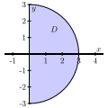
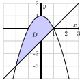
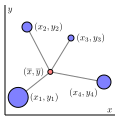
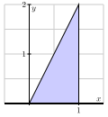

If we have a mass density function for a lamina (thin plate), how does a double integral determine the mass of the lamina?
How may a double integral be used to find the area between two curves?
Given a mass density function on a lamina, how can we find the lamina's center of mass?
What is a joint probability density function? How do we determine the probability of an event if we know a probability density function?
So far, we have interpreted the double integral of a function \(f\) over a domain \(D\) in two different ways. First, \(\iint_D f(x,y) \, dA\) tells us a difference of volumes — the volume the surface defined by \(f\) bounds above the \(xy\)-plane on \(D\) minus the volume the surface bounds below the \(xy\)-plane on \(D\text{.}\) In addition, \(\frac{1}{A(D)} \iint_D f(x,y) \, dA\) determines the average value of \(f\) on \(D\text{.}\) In this section, we investigate several other applications of double integrals, using the integration process as seen in Preview Activity 11.4.1: we partition into small regions, approximate the desired quantity on each small region, then use the integral to sum these values exactly in the limit.
The following preview activity explores how a double integral can be used to determine the density of a thin plate with a mass density distribution. Recall that in single-variable calculus, we considered a similar problem and computed the mass of a one-dimensional rod with a mass-density distribution. There, as here, the key idea is that if density is constant, mass is the product of density and volume.
Preview Activity11.4.1.
Suppose that we have a flat, thin object (called a lamina) whose density varies across the object. We can think of the density on a lamina as a measure of mass per unit area. As an example, consider a circular plate \(D\) of radius 1 cm centered at the origin whose density \(\delta\) varies depending on the distance from its center so that the density in grams per square centimeter at point \((x, y)\) is
Suppose that we partition the plate into subrectangles \(R_{ij}\text{,}\) where \(1 \leq i \leq m\) and \(1 \leq j \leq n\text{,}\) of equal area \(\Delta A\text{,}\) and select a point \((x_{ij}^*,y_{ij}^*)\) in \(R_{ij}\) for each \(i\) and \(j\text{.}\) What is the meaning of the quantity \(\delta(x_{ij}^*,y_{ij}^*) \Delta A\text{?}\)
State a double Riemann sum that provides an approximation of the mass of the plate.
Explain why the double integral
\begin{equation*}
\iint_D \delta(x,y) \, dA
\end{equation*}
tells us the exact mass of the plate.
Determine an iterated integral which, if evaluated, would give the exact mass of the plate. Do not actually evaluate the integral. (This integral is considerably easier to evaluate in polar coordinates, which we will learn more about in Section 11.5.)
Subsection11.4.1Mass
Density is a measure of some quantity per unit area or volume. For example, we can measure the human population density of some region as the number of humans in that region divided by the area of that region. In physics, the mass density of an object is the mass of the object per unit area or volume. As suggested by Preview Activity 11.4.1, the following holds in general.
The mass of a lamina.
If \(\delta(x, y)\) describes the density of a lamina defined by a planar region \(D\text{,}\) then the mass of \(D\) is given by the double integral \(\iint_D \delta(x,y) \, dA\text{.}\)
Activity11.4.2.
Let \(D\) be a half-disk lamina of radius 3 in quadrants IV and I, centered at the origin as shown in Figure 11.4.1. Assume the density at point \((x,y)\) is given by \(\delta(x,y) = x\text{.}\) Find the exact mass of the lamina.

Figure11.4.1.A half disk lamina.
Subsection11.4.2Area
If we consider the situation where the mass-density distribution is constant, we can also see how a double integral may be used to determine the area of a region. Assuming that \(\delta(x,y) = 1\) over a closed bounded region \(D\text{,}\) where the units of \(\delta\) are “mass per unit of area,” it follows that \(\iint_D 1 \, dA\) is the mass of the lamina. But since the density is constant, the numerical value of the integral is simply the area.
As the following activity demonstrates, we can also see this fact by considering a three-dimensional solid whose height is always 1.
Activity11.4.3.
Suppose we want to find the area of the bounded region \(D\) between the curves
\begin{equation*}
y = 1-x^2 \ \ \ \ \ \text{ and } \ \ \ \ \ y=x-1.
\end{equation*}
The volume of a solid with constant height is given by the area of the base times the height. Hence, we may interpret the area of the region \(D\) as the volume of a solid with base \(D\) and of uniform height 1. That is, the area of \(D\) is given by \(\iint_D 1 \, dA\text{.}\) Write an iterated integral whose value is \(\iint_D 1 \, dA\text{.}\) (Hint: Which order of integration might be more efficient? Why?)

Figure11.4.2.The graphs of \(y = 1-x^2\) and \(y=x-1\text{.}\)
Evaluate the iterated integral from (a). What does the result tell you?
We now formally state the conclusion from our earlier discussion and Activity 11.4.3.
The double integral and area.
Given a closed, bounded region \(D\) in the plane, the area of \(D\text{,}\) denoted \(A(D)\text{,}\) is given by the double integral
\begin{equation*}
A(D) = \iint_D 1 \, dA.
\end{equation*}
Subsection11.4.3Center of Mass
The center of mass of an object is a point at which the object will balance perfectly. For example, the center of mass of a circular disk of uniform density is located at its center. For any object, if we throw it through the air, it will spin around its center of mass and behave as if all the mass is located at the center of mass.
In order to understand the role that integrals play in determining the center of mass of an object with a nonuniform mass distribution, we start by finding the center of mass of a collection of \(N\) distinct point-masses in the plane.
Let \(m_1\text{,}\)\(m_2\text{,}\)\(\ldots\text{,}\)\(m_N\) be \(N\) masses located in the plane. Think of these masses as connected by rigid rods of negligible weight from some central point \((x,y)\text{.}\) A picture with four masses is shown in Figure 11.4.3. Now imagine balancing this system by placing it on a thin pole at the point \((x,y)\) perpendicular to the plane containing the masses. Unless the masses are perfectly balanced, the system will fall off the pole. The point \((\overline{x}, \overline{y})\) at which the system will balance perfectly is called the center of mass of the system. Our goal is to determine the center of mass of a system of discrete masses, then extend this to a continuous lamina.

Figure11.4.3.A center of mass \((\overline{x}, \overline{y})\) of four masses.
Each mass exerts a force (called a moment) around the lines \(x=\overline{x}\) and \(y=\overline{y}\) that causes the system to tilt in the direction of the mass. These moments are dependent on the mass and the distance from the given line. Let \((x_1,y_1)\) be the location of mass \(m_1\text{,}\)\((x_2,y_2)\) the location of mass \(m_2\text{,}\) etc. In order to balance perfectly, the moments in the \(x\) direction and in the \(y\) direction must be in equilibrium. We determine these moments and solve the resulting system to find the equilibrium point \((\overline{x}, \overline{y})\) at the center of mass.
The force that mass \(m_1\) exerts to tilt the system from the line \(y=\overline{y}\) is
The value \(M_x~=~\sum_{k=1}^N m_ky_k\) is called the total moment with respect to the \(x\)-axis; \(M_y~=~\sum_{k=1}^N m_kx_k\) is the total moment with respect to the \(y\)-axis. Hence, the respective quotients of the moments to the total mass, \(M\text{,}\) determines the center of mass of a point-mass system:
Now, suppose that rather than a point-mass system, we have a continuous lamina with a variable mass-density \(\delta(x, y)\text{.}\) We may estimate its center of mass by partitioning the lamina into \(mn\) subrectangles of equal area \(\Delta A\text{,}\) and treating the resulting partitioned lamina as a point-mass system. In particular, we select a point \((x_{ij}^*,y_{ij}^*)\) in the \(ij\)th subrectangle, and observe that the quanity
\begin{equation*}
\delta(x_{ij}^*,y_{ij}^*) \Delta A
\end{equation*}
is density times area, so \(\delta(x_{ij}^*,y_{ij}^*) \Delta A\) approximates the mass of the small portion of the lamina determined by the subrectangle \(R_{ij}\text{.}\)
We now treat \(\delta(x_{ij}^*,y_{ij}^*) \Delta A\) as a point mass at the point \((x_{ij}^*,y_{ij}^*)\text{.}\) The coordinates \((\overline{x}, \overline{y})\) of the center of mass of these \(mn\) point masses are thus given by
The center of mass of a lamina can then be thought of as a weighted average of all of the points in the lamina with the weights given by the density at each point. The centroid of a lamina is the just the average of all of the points in the lamina, or the center of mass if the density at each point is 1.
The numerators of \(\overline{x}\) and \(\overline{y}\) are called the respective moments of the lamina about the coordinate axes. Thus, the moment of a lamina \(D\) with density \(\delta = \delta(x,y)\) about the \(y\)-axis is
\begin{equation*}
M_y = \iint_D x\delta(x,y) \, dA
\end{equation*}
and the moment of \(D\) about the \(x\)-axis is
\begin{equation*}
M_x = \iint_D y\delta(x,y) \, dA.
\end{equation*}
If \(M\) is the mass of the lamina, it follows that the center of mass is
In this activity we determine integrals that represent the center of mass of a lamina \(D\) described by the triangular region bounded by the \(x\)-axis and the lines \(x = 1\) and \(y = 2x\) in the first quadrant if the density at point \((x, y)\) is \(\delta(x, y) = 6x + 6y + 6\text{.}\) A picture of the lamina is shown in Figure 11.4.4.

Figure11.4.4.The lamina bounded by the \(x\)-axis and the lines \(x = 1\) and \(y = 2x\) in the first quadrant.
Set up an iterated integral that represents the mass of the lamina.
Assume the mass of the lamina is 14. Set up two iterated integrals that represent the coordinates of the center of mass of the lamina.
Subsection11.4.4Probability
Calculating probabilities is a very important application of integration in the physical, social, and life sciences. To understand the basics, consider the game of darts in which a player throws a dart at a board and tries to hit a particular target. Let us suppose that a dart board is in the form of a disk \(D\) with radius 10 inches. If we assume that a player throws a dart at random, and is not aiming at any particular point, then it is equally probable that the dart will strike any single point on the board. For instance, the probability that the dart will strike a particular 1 square inch region is \(\frac{1}{100 \pi}\text{,}\) or the ratio of the area of the desired target to the total area of \(D\) (assuming that the dart thrower always hits the board itself at some point). Similarly, the probability that the dart strikes a point in the disk \(D_3\) of radius 3 inches is given by the area of \(D_3\) divided by the area of \(D\text{.}\) In other words, the probability that the dart strikes the disk \(D_3\) is
\begin{equation*}
\frac{9 \pi}{100\pi} = \iint_{D_3} \frac{1}{100 \pi} \, dA.
\end{equation*}
The integrand, \(\frac{1}{100\pi}\text{,}\) may be thought of as a distribution function, describing how the dart strikes are distributed across the board. In this case the distribution function is constant since we are assuming a uniform distribution, but we can easily envision situations where the distribution function varies. For example, if the player is fairly good and is aiming for the bulls eye (the center of \(D\)), then the distribution function \(f\) could be skewed toward the center, say
\begin{equation*}
f(x,y) = K e^{-(x^2+y^2)}
\end{equation*}
for some constant positive \(K\text{.}\) If we assume that the player is consistent enough so that the dart always strikes the board, then the probability that the dart strikes the board somewhere is 1, and the distribution function \(f\) will have to satisfy 1
\begin{equation*}
\iint_D f(x,y) \, dA = 1.
\end{equation*}
For such a function \(f\text{,}\) the probability that the dart strikes in the disk \(D_1\) of radius 1 would be
\begin{equation*}
\iint_{D_1} f(x,y) \, dA.
\end{equation*}
Indeed, the probability that the dart strikes in any region \(R\) that lies within \(D\) is given by
\begin{equation*}
\iint_R f(x,y) \, dA.
\end{equation*}
The preceding discussion highlights the general idea behind calculating probabilities. We assume we have a joint probability density function\(f\text{,}\) a function of two independent variables \(x\) and \(y\) defined on a domain \(D\) that satisfies the conditions
\(f(x,y) \geq 0\) for all \(x\) and \(y\) in \(D\text{,}\)
the probability that \(x\) is between some values \(a\) and \(b\) while \(y\) is between some values \(c\) and \(d\) is given by
\begin{equation*}
\int_a^b \int_c^d f(x,y) \, dy \, dx,
\end{equation*}
The probability that the point \((x,y)\) is in \(D\) is 1, that is
\begin{equation}
\iint_D f(x,y) \, dA = 1.\tag{11.4.1}
\end{equation}
Note that it is possible that \(D\) could be an infinite region and the limits on the integral in Equation (11.4.1) could be infinite. When we have such a probability density function \(f=f(x,y)\text{,}\) the probability that the point \((x,y)\) is in some region \(R\) contained in the domain \(D\) (the notation we use here is “\(P((x,y)\in R)\)”) is determined by
\begin{equation*}
P((x,y)\in R) = \iint_R f(x,y) \, dA.
\end{equation*}
Activity11.4.5.
A firm manufactures smoke detectors. Two components for the detectors come from different suppliers — one in Michigan and one in Ohio. The company studies these components for their reliability and their data suggests that if \(x\) is the life span (in years) of a randomly chosen component from the Michigan supplier and \(y\) the life span (in years) of a randomly chosen component from the Ohio supplier, then the joint probability density function \(f\) might be given by
Theoretically, the components might last forever, so the domain \(D\) of the function \(f\) is the set \(D\) of all \((x,y)\) such that \(x \ge 0\) and \(y \ge 0\text{.}\) To show that \(f\) is a probability density function on \(D\) we need to demonstrate that
\begin{equation*}
\int \int_D f(x,y) \, dA = 1,
\end{equation*}
Use your knowledge of improper integrals to verify that \(f\) is indeed a probability density function.
Assume that the smoke detector fails only if both of the supplied components fail. To determine the probability that a randomly selected detector will fail within one year, we will need to determine the probability that the life span of each component is between 0 and 1 years. Set up an appropriate iterated integral, and evaluate the integral to determine the probability.
What is the probability that a randomly chosen smoke detector will fail between years 3 and 7?
Suppose that the manufacturer determines that one of the components is more likely to fail than the other, and hence conjectures that the probability density function is instead \(f(x,y) = K e^{-x} e^{-2y}.\) What is the value of \(K\text{?}\)
Subsection11.4.5Summary
The mass of a lamina \(D\) with a mass density function \(\delta = \delta(x,y)\) is \(\iint_D \delta(x,y) \, dA.\)
The area of a region \(D\) in the plane has the same numerical value as the volume of a solid of uniform height 1 and base \(D\text{,}\) so the area of \(D\) is given by \(\iint_D 1 \, dA.\)
The center of mass, \((\overline{x},\overline{y})\text{,}\) of a continuous lamina with a variable density \(\delta(x,y)\) is given by
Given a joint probability density function \(f\) is a function of two independent variables \(x\) and \(y\) defined on a domain \(D\text{,}\) if \(R\) is some subregion of \(D\text{,}\) then the probability that \((x,y)\) is in \(R\) is given by
\begin{equation*}
\iint_R f(x,y) \, dA.
\end{equation*}
Exercises11.4.6Exercises
1.
The masses \(m_i\) are located at the points \(P_i\text{.}\) Find the center of mass of the system.
Find the centroid \((\bar x,\bar y)\) of the triangle with vertices at \((0,0)\text{,}\)\((7,0)\text{,}\) and \((0,4)\text{.}\)
\(\bar x\)=
\(\bar y\)=
3.
Find the mass of the rectangular region \(0 \leq x \leq 2\text{,}\)\(0
\leq y \leq 2\) with density function \(\rho \left( x, y \right) = 2 - y\text{.}\)
4.
Find the mass of the triangular region with vertices (0, 0), (4, 0), and (0, 1), with density function \(\rho \left( x, y \right) = x^2 + y^2\text{.}\)
5.
A lamina occupies the region inside the circle \(x^2 + y^2 = 12 y\) but outside the circle \(x^2 + y^2 = 36\text{.}\) The density at each point is inversely proportional to its distance from the orgin.
Where is the center of mass?
( , )
6.
A sprinkler distributes water in a circular pattern, supplying water to a depth of \(e^{-r}\) feet per hour at a distance of r feet from the sprinkler.
A. What is the total amount of water supplied per hour inside of a circle of radius 9?
\({ft}^3\) per hour
B. What is the total amount of water that goes through the sprinkler per hour?
\({ft}^3\) per hour
7.
Let \(p\) be the joint density function such that \(p(x,y) = \frac{1}{9} xy\) in \(R\text{,}\) the rectangle \(0 \le x \le 6, 0\le y \le 1\text{,}\) and \(p(x,y)=0\) outside \(R\text{.}\) Find the fraction of the population satisfying the constraint \(x+y \le 7\)
fraction =
8.
A lamp has two bulbs, each of a type with an average lifetime of 2 hours. The probability density function for the lifetime of a bulb is \(f(t) = \frac{1}{2}
e^{-t/2}, t \geq 0\text{.}\)
What is the probability that both of the bulbs will fail within 5 hours?
9.
For the following two functions \(p(x,y)\text{,}\) check whether \(p\) is a joint density function. Assume \(p(x,y)=0\) outside the region \(R\text{.}\)
(a)\(p(x,y)=1\text{,}\) where \(R\) is \(0 \le x \le 1,
2 \le y \le 2.5\text{.}\)
\(p(x,y)\)
is a joint density function
is not a joint density function
(b)\(p(x,y)=2\text{,}\) where \(R\) is \(2 \le x \le 2.5,
-1 \le y \le 3\text{.}\)
\(p(x,y)\)
is a joint density function
is not a joint density function
Then, for the region \(R\) given by \(2 \le x \le 3,
0 \le y \le 2\text{,}\) what constant function \(p(x,y)\) is a joint density function?
A triangular plate is bounded by the graphs of the equations \(y = 2x\text{,}\)\(y = 4x\text{,}\) and \(y = 4\text{.}\) The plate's density at \((x,y)\) is given by \(\delta(x,y) = 4xy^2 + 1\text{,}\) measured in grams per square centimeter (and \(x\) and \(y\) are measured in centimeters).
Set up an iterated integral whose value is the mass of the plate. Include a labeled sketch of the region of integration. Why did you choose the order of integration you did?
Determine the mass of the plate.
Determine the exact center of mass of the plate. Draw and label the point you find on your sketch from (a).
What is the average density of the plate? Include units on your answer.
12.
Let \(D\) be a half-disk lamina of radius 3 in quadrants IV and I, centered at the origin as in Activity 11.4.2. Assume the density at point \((x,y)\) is equal to \(x\text{.}\)
Before doing any calculations, what do you expect the \(y\)-coordinate of the center of mass to be? Why?
Set up iterated integral expressions which, if evaluated, will determine the exact center of mass of the lamina.
Use appropriate technology to evaluate the integrals to find the center of mass numerically.
13.
Let \(x\) denote the time (in minutes) that a person spends waiting in a checkout line at a grocery store and \(y\) the time (in minutes) that it takes to check out. Suppose the joint probability density for \(x\) and \(y\) is
What is the exact probability that a person spends between 0 to 5 minutes waiting in line, and then 0 to 5 minutes waiting to check out?
Set up, but do not evaluate, an iterated integral whose value determines the exact probability that a person spends at most 10 minutes total both waiting in line and checking out at this grocery store.
Set up, but do not evaluate, an iterated integral expression whose value determines the exact probability that a person spends at least 10 minutes total both waiting in line and checking out, but not more than 20 minutes.
This makes \(K = \frac{1}{\pi\left(1-e^{-100}\right)}\text{,}\) which you can check.